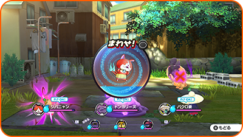
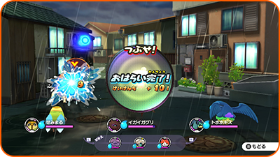
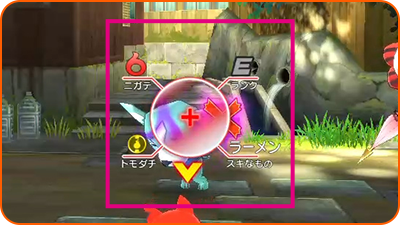
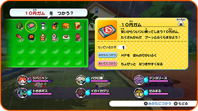

Combates: Dar ordenes
Aquí se explica cómo dar órdenes durante los combates.
Opción: Animáximum
Te permite usar el animáximum de un Yo-kai. Selecciona un Yo-kai que tenga el animámetro lleno y sigue las instrucciones que aparezcan en pantalla. Cuando el indicador esté lleno, tu Yo-kai liberará un animáximum.

Opción: Purificar
Los Yo-kai espiritados por enemigos sufrirán todo tipo de efectos negativos. Puedes curar a un Yo-kai si lo mueves a la parte posterior y utilizas la opción "Purificar". Sigue las instrucciones que veas en pantalla para purificar a un Yo-kai.
※ Cuando las purificaciones funcionen, tus Yo-kai también recibirán puntos de experiencia.

Opción: Objetivo
Te permite colocar un marcador sobre el enemigo en el que quieres centrar tus ataques. Mueve la lente Yo-kai para situarla sobre un Yo-kai enemigo y, a continuación, pulsa Ⓐ para colocar un marcador sobre él. En el caso de los jefes, es posible colocar el marcador en diferentes partes de sus cuerpos.

Quitar marcador
Selecciona "Quitar marcador" para eliminar un marcador, o mueve la lente hacia un punto donde no haya enemigos Yo-kai y pulsa Ⓐ.
Espiriesfera
Si ves una esfera brillante durante un combate, ¡trata de marcarla! Se trata de una espiresfera. No se quedará ahí durante mucho tiempo, así que ¡marca una para ver qué esconde!
Opción: Objetos
Esta opción te permite utilizar objetos. Para usar un objeto en un aliado, toca el objeto, "Usar en amigo" y, por último, el Yo-kai en el que lo quieras usar. Para usarlo en un enemigo, selecciona el objeto y, a continuación, "Usar en oponente".

Entablar amistad con los enemigos
Si le das a un Yo-kai enemigo una comida que le guste, las posibilidades de que ese Yo-kai se una a ti tras el combate aumentarán. Si le ofreces su comida favorita, ¡la probabilidad será incluso mayor!
Cambiar Yo-kai
Si haces girar la rueda Yo-kai pulsando L /R, puedes intercambiar Yo-kai entre la línea frontal y la posterior.